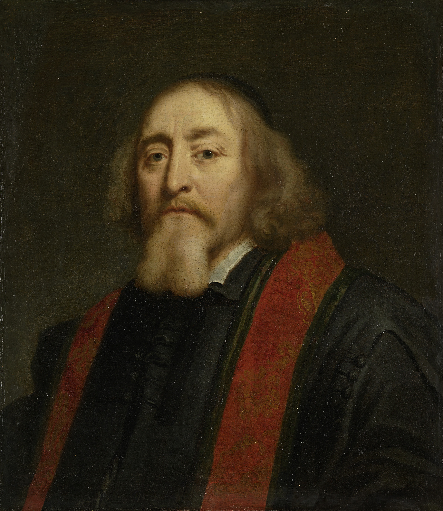

Literatura v období baroka
Jan Amos Komenský

Zdroj: Fine art America
- pedagog, filozof, spisovatel
- narodil se roku 1592, místo narození není známo (Uherský Brod, Nivnice, Komňa)
- chodil do školy ve Strážnici
- studoval na gymnáziu v Přerově a v zahraničí
- stal se učitelem a biskupem jednoty bratrské
- protože odmítl přejít na katolické náboženství, odešel roku 1628 do Lešna (v dnešním Polsku)
- v Lešně vznikla velká část jeho pedagogických děl, ale při tamějším požáru přišel skoro o všechna díla
- žil i v Maďarsku, Nizozemsku, Švédsku a Velké Británii
- do své vlasti se nikdy nevrátil, zemřel roku 1670 v Amsterdamu
- pedagogická díla
- Velká didaktika - zásady moderní pedagogiky
- Orbis pictus (Svět v obrazech) - obrázková učebnice
- Informatorium školy mateřské - rady matkám k výchově svých dětí
- filozoficko-náboženská díla
- Labyrint světa a ráj srdce - alegorický román